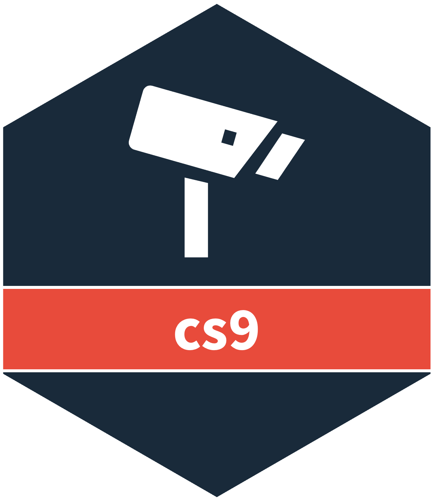

Compare the staged rows of a task run with the live rows
Source:R/run_compare.R
compare_staged_to_live.Rdcompare_staged_to_live() reads the rows that the task run in progress
staged in table, and the live rows of table. It returns the values of
one column of both, side by side, for each key and partition.
Arguments
- table
A
DBTableExtended_v9or aDBPartitionedTableExtended_v9of the task run, astables$<name>in the action of the task.- key
A character vector of column names. The values of these columns identify a key. The vector MUST NOT contain
partition,staged,liveorproblem. The result andcheck_staged_against_live()use these names.- value
The name of one column. Its values MUST be numeric.
- filter
NULL, or a function that takes a lazy table and returns a lazy table. The function applies it to the staged rows and to each live table before it collects them.
Value
A data.table with the key columns and these columns:
partition: character. The name of the partition, as innames(table$tables).NAfor a table without partitions.staged: numeric. The staged value, orNAwhere no staged row holds the key in that partition.live: numeric. The live value, orNAwhere no live row holds the key in that partition.
The rows are sorted by the key columns, partition, staged and
live, with NA first.
Details
The function reads the staged rows with table$staged_tbl(). It reads the
live rows with tbl() of table, or of each partition table of a
partitioned table. It skips a live table that does not exist. It collects
each side with csdb::collect_and_sort_by_pk().
The function works only during a task run of a task that has table in
its tables. Outside a run it stops with the error of staged_tbl().
A row of the result holds at most one staged value and one live value.
Several rows of one side can share a key in one partition, for example
when key is not the whole primary key. The function then keeps each
distinct value. The result then has one row for each combination of a
distinct staged value and a distinct live value of that key and partition.
check_staged_against_live() then sees the disagreement.
The function reads a value of NA as no value.
Examples
if (FALSE) { # \dontrun{
# In the action of a task that has the table `results` in its tables.
weeks <- c("2026-45", "2026-46")
comparison <- compare_staged_to_live(
tables$results,
key = "isoyearweek",
value = "n",
filter = function(x) dplyr::filter(x, isoyearweek %in% !!weeks)
)
check_staged_against_live(comparison)
} # }